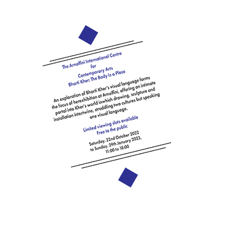
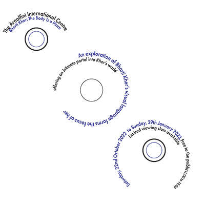
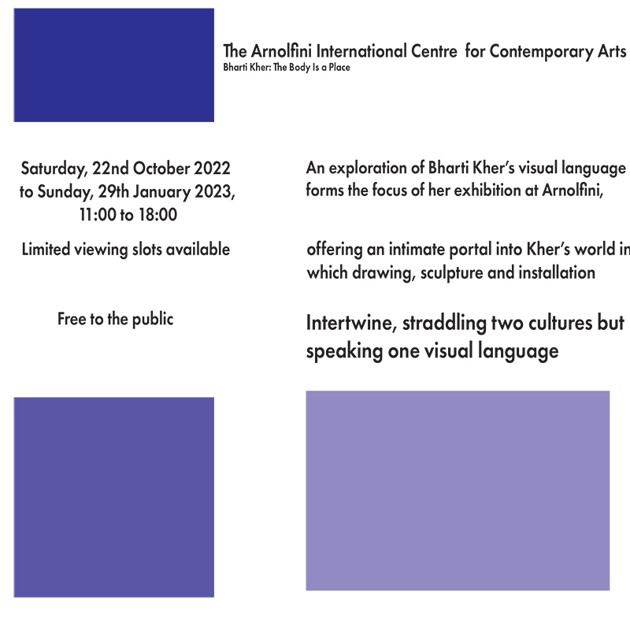
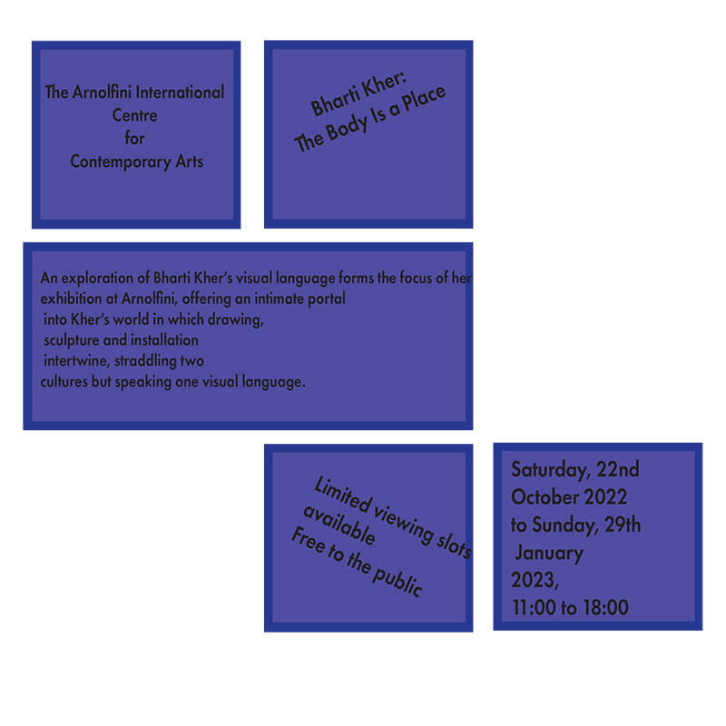
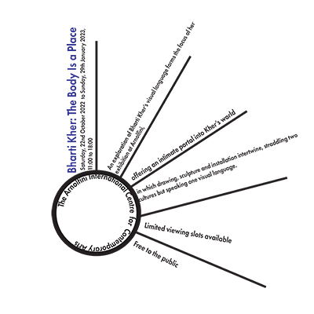
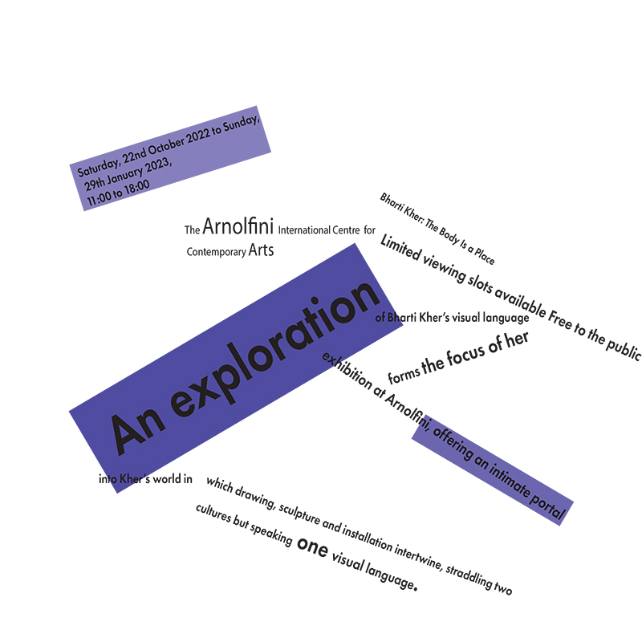
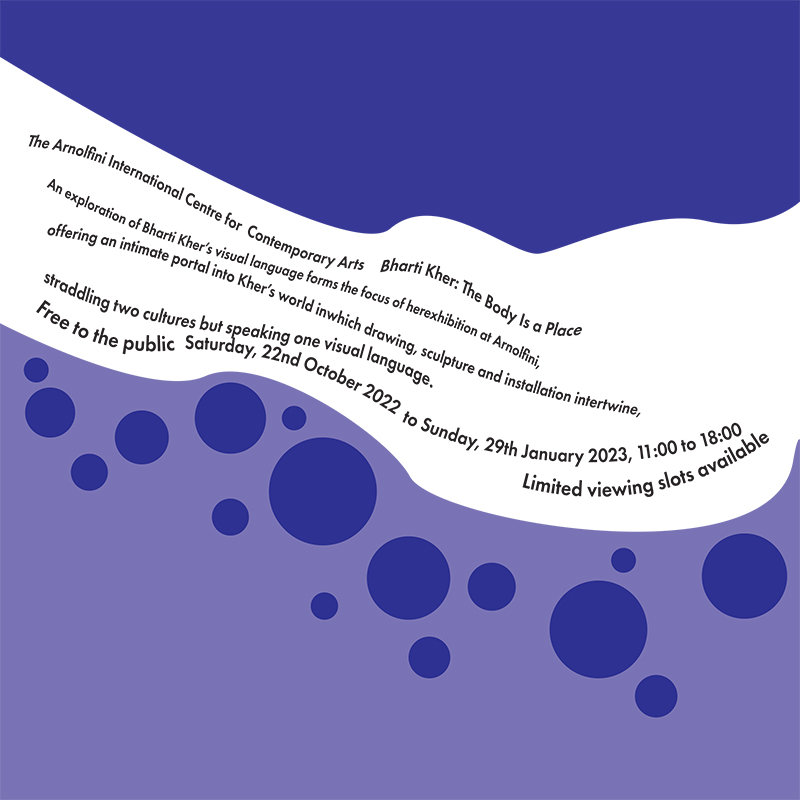

This is my first website I have created with HTML and CSS, using this I created tasks required for my Graphic and Web Design Module in Digital Media
Here you can find my tasks below:
Here you can find my tasks below:
CARP Posters
Here are my posters I designed for the Bristol Balloon Fiesta:
In my first version of my poster design, I decided to predominantly use triangles to divide the poster into sections, with the logo being in the top left of the first black triangle and the festia information being mainly in the blue triangle in the middle, but in doing this I still chose to make the proximity of the elements in my design quite tight and close. I incorporated contrast with the choice of white text inside of the blue colour of the triangle, I also used contrast by choosing a black text to contrast the white text. My repetition would be another significant part of the design as I've made the text “fade away” by removing the last word of each line until the words “4 free days” remained, I chose to keep the font within the same font family. One more choice I made for this poster was to have my alignment following the angle of the triangles which made for my text being at a slant and I chose to repeat this with the logos in my design, with the only one not following this being the main festival logo.
For the second iteration of my poster, I kept triangles in the design however I used them to make my images of the hot air balloons look like arrows, I repeated this to create two “arrows” in my design, an alternate way I used repetition was through using 3 rectangles within one of these arrows, one after the other. I chose to use alignment to make my festival information text at a 270-degree angle, I deterred from my first poster by making my logos straight in line. Another design choice was that I contrasted more prominently in the design by choosing white text on my jet black background and using black text on the white arrow shape that I created. I borrowed the tight proximity feel from my previous poster but put a heavier emphasis on how close everything was specifically on the left side of the design.
My third type of poster was very different to my past two as in comparison to my second poster it’s a lot more simplistic with not as many elements on the page and the main visual staple being a hot air balloon that I highlighted with a centrally placed white circle with my text aligned against the curve of this circle. I repeated the selection of white text but this time I chose to display contrast against a vibrant blue background. My use of repetition can be seen through the textual information having the same text below it but with a lower opacity creating a slight fade. I decided to keep the text near one another however the logos of the festival supporters were purposefully in further proximity from each other, and the main fiesta logo followed this as well. I took inspiration from my first design by having my text at an angle again but deviated with my other logos being straight on.
The Final design of my poster was majorly influenced by my third design which was one of my personal favourites, this can be seen with blue as my main colour palette with the white text for contrast and how I’ve used circular cut-outs of a hot air balloon as one of my main components for the poster layout. I also borrowed my starting poster’s use of triangles in this final version. How I’ve improved and changed from my third design is by using different shades of blue within my colour palette and using a gradient as my background, I’ve also decided to use a variety of different font family’s as in the past three designs I’ve kept them quite consistent, these being “Microsoft Jhenghei”, “Franklin Gothic Medium Cond” and “Minion Pro” being the font I’ve used consistently in my past three iterations displaying my use of repitition. I chose to use repetition in this design by including a second circular image design and much like my third design using a duplicate of the textual information but lowering the opacity, I also chose to repeat the line underneath the main event logo by creating one above it and another smaller one underneath the “GWR” logo. I appreciate the use of blues and white empowers the theme of hot balloons and the sky for the festival. I aimed for more evenly spaced proximity between each element in this design. My alignment was to a moderate level, I chose to keep the slanted text from before and decided to make only two of the logos tilted as well, all including the main fiesta logo of the event remain neutral.
TYPOGRAPHY
I learnt about the 8 typographic systems and made subsequently made 8 posters for an Arnolfini exhibition, which can be seen here:
Axial Design - The elements of the design are positioned either right or left on an imaginary central axis point, I added extra lines from this central point to add to my design.
Bilateral Design - The design is based on a pivot rather than on an axis, which the axial design incorporates, I decided to add lines and rectangles in my sole other colour option.
Dilatational Design - This is where the text of the design follows around the curve of a circle for my own personal design, I decided to incorporate a circle in my actual design.
Grid design - Parts of the design are divided evenly into sections, within my design I filled my sections with text and with coloured rectangles which could be an alternative for an image for example.
Modular design - Very similar principles to the grid design however the sections follow no specific rules and can be included randomly or not at all, this can be witnessed in my design as some sections are left blank.
Radial Design - This type of typography rotates around the circle of a design rather than following the curve, I decided to have lines extrude from my circle to imitate a sunray-like look.
Random Design - This doesn't follow any design principles or rules, I showed this by arranging my texts at different angles and using blue rectangles at different points across the designs.
Transitional design - Within this variation of typography the text implies a form of movement in the way it’s been aligned, within my design, I chose to mimic a water wave, and I achieved this by creating wave-like shapes to help emphasise this and circles to create bubbles.
WORKSHEETS
Here you can find my HTML and CSS weekly worksheets that I've worked on:
In the first week I learnt about setting up my first repository from scratch and creating a simple piece of html code using the "body" function to display the required text.

Worksheets 2 and 3 were stragihtforward as I learnt about the basic fundamental building blocks in creating web pages with html. Within these weeks I also learnt about styling with css in which I learnt how to change a font's size, family, colour and adjusting image sizing. The most valuable elements I learnt were abotu flexboxes and padding and how they imapct the design of a website.

In the final weeks of the worksheets we learnt more advanced flexbox techniques, embedding both aduio and video, buttons and anchor links. My personal favourite part of this weeks code was learning about Adobe and Google fonts in where you can bring your fonts up to the next level. In all these worksheets transformed my ability with html and have made me not only more confident with it but eager experiment and tackle it.

REFLECTION
My Overview of how my project went:
Overall, the entirety of this module has been thoroughly enjoyable, all the way with starting from building up the minor elements of the website, and creating posters using both Adobe Illustrator and Adobe Indesign, in which I have no prior experience, through this module I’ve become confident in both programmes and will not shy away from including them in future projects. The same situation can be said about my knowledge of HTML and CSS as I did not know any form of coding languages, the worksheets equipped me with an fundamental skills to create the website I’m presenting to you now. However, the worksheets didn’t teach me multiple factors such as the correct arrangements in css to use when dealing with a vast array of images and text as that was one of the most challenging factors in website creation. Discovering these new methods and types of code has been pleasant in my creation process, as I also had to discover how to change my background image from a solid block of colour to a piece of art I made in photoshop as I didn’t like the initial look of my initial sole colour design, this was done simply by the command “background-image: URL” and as a result am very pleased with the theme of my website as it ties in with my original aesthetic I came up with my moodboard.